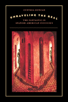

<body bgcolor="#FFFFFF" text="#000000" link="#0000FF" vlink="#CC0000" alink="#CC0000"><center><hr width="350" size="1" align="center" noshade>Exploring the fantastic in Spanish American literature as an expression of subversiveness that threatening to undermine the culture<hr width="350" size="1" align="center" noshade><p><a href="https://cdcshoppingcart.uchicago.edu/Cart/ChicagoBook.aspx?ISBN=9781439902400&&PRESS=temple" target="_top">Buy this book!</a> | <a href="https://cdcshoppingcart.uchicago.edu/Cart/Cart.aspx?PRESS=temple" target="_top">View Cart</a> | <a href="https://cdcshoppingcart.uchicago.edu/Cart/Cart.aspx?PRESS=temple" target="_top">Check Out</a></p><p></p></center><!--none//--><h1>Unraveling the Real</h1>
<H2>The Fantastic in Spanish-American 'Ficciones'</H2>
<h3>Cynthia Duncan</h3>
<P>cloth 1-4399-0240-2 $75.50, Sep 10, <FONT COLOR=#990033>Available</FONT>
<br>paper 1-4399-0241-0 $29.95, Sep 10, <FONT COLOR=#990033>Available</FONT>
<br>Electronic Book 1-4399-0242-9 $29.95 <FONT COLOR=#990033>Available</FONT>
<BR> 280 pp
6x9
</P><BLOCKQUOTE><I><em>"Unraveling the Real is a very readable, succinct introduction to the topic of the fantastic and its primary critics. Duncan presents a review of the texts on the fantastic and applies this trace to individual authors and film directors, narrative strategies, psychological processes and gender issues. Her introduction is effective in establishing the borders and transgressions of the fantastic, and she is not afraid of moving from the literature of and on the fantastic to the questioning of cultural constructs. Her objective to emphasize the analysis of social criticism is an effective approach."</em><BR>
&mdash;<b>Enrique Sacerio-Gar�</b>, Bryn Mawr College</I></BLOCKQUOTE>
<p>In literary and cinematic fictions, the fantastic blurs the lines between reality and fantasy. Lacking a consensus on definition, critics often describe the fantastic as supernatural, or similar to, but quite different from fantasy, science fiction, and magical realism.</p>
<p>In <em>Unraveling the Real</em>, Cynthia Duncan provides a new theoretical framework for discussing how the fantastic explores both metaphysical and socially relevant themes in Spanish American fictions. Duncan deftly shows how authors and artists have used this literary genre to convey marginalized voices as well as critique colonialism, racism, sexism, and classism. Selecting examples from the works of such noted writers as Jorge Luis Borges, Julio Cort�zar, and Carlos Fuentes, among others, she shows how capacious the concept is, and why it eludes standard definition.</p>
<p>Challenging the notion that the fantastic is escapist in nature, <em>Unraveling the Real</em> shows how the fantastic has been politically engaged throughout the twentieth century, often questioning what is real or unreal. Presenting a mirror image of reality, the fantastic does not promote a utopian parallel universe but rather challenges the way we think about the world around us and the cultural legacy of colonialism.</p>
<BR>&nbsp;<h2>Excerpt</h2><P>Excerpt available at <a href="http://www.temple.edu/tempress">www.temple.edu/tempress</a></p>
<BR>&nbsp;<h2>Reviews</h2>
<p><I>"The clarity of the definitions, the overview of the historic development, and the critical apparatus stated without undue recourse to theoretical jargon make </i>Unraveling the Real<i> a useful study for anyone interested in Latin American fantastic fiction. Duncan�s analysis of Carlos Fuentes's recent collection of short stories confirms her point that the genre is alive and well and living in Latin America, and indicates the ways in which this genre could move in the future. The close textual analyses of works both familiar and not are beautifully done and offer fine models for students to emulate."</I>
<br>&#151<b>Patricia N. Klingenberg</b>, Professor of Latin American Literature, Department of Spanish and Portuguese, Miami University, Oxford, OH
<p><i>"This is a splendid resource for scholars of Spanish American literature. Summing Up: Highly recommended."</i> <br>&#151;<b><i>Choice</i></b>
<p><i>"</i>Unraveling the Real<i> offers a welcome update to the existing criticism on the genre and some useful speculation as to its future.... [T]he literature covered is substantial, and all major critical perspectives are well represented. This is a highly readable and useful book for students, scholars, and others interested in the fantastic literature of Latin America."</i> <br>&#151;<b><i>The Americas</i></b>
<BR>&nbsp;<h2>Contents</h2><P>
<br>Acknowledgements
<br>Introduction. The Fantastic as a Literary Genre
<br>1. Modernist Short Stories and the Fantastic
<br>2. The Fantastic as an Interrogation of Literary Practices
<br>3. Reclaiming History: Fantastic Journeys in Time and Space
<br>4. Psychoanalytic Readings of the Fantastic
<br>5. The Fantastic and the Conventions of Gothic Romance
<br>6. Women Writers of the Fantastic
<br>7. Cinematic Encounters with the Fantastic
<br>Conclusion. Fantastic Literature in Spanish America in the Twenty-First Century
<br>Notes
<br>Bibliography
<br>Index
</P><BR>&nbsp;<H2>About the Author(s)</H2>
<P><b>Cynthia Duncan</b> is Associate Professor of Hispanic Studies at University of Washington, Tacoma.</P>
<BR><H2>Subject Categories</H2>
<p><A HREF="/tempress/literature.html" TARGET="_top">Literature and Drama</a>
<BR><A HREF="/tempress/latin.html" TARGET="_top">Latin American/Caribbean Studies</a>
</p>
<p align="center"><a href="https://cdcshoppingcart.uchicago.edu/Cart/ChicagoBook.aspx?ISBN=9781439902400&&PRESS=temple" target="_top">Buy this book!</a> | <a href="https://cdcshoppingcart.uchicago.edu/Cart/Cart.aspx?PRESS=temple" target="_top">View Cart</a> | <a href="https://cdcshoppingcart.uchicago.edu/Cart/Cart.aspx?PRESS=temple" target="_top">Check Out</a></p><p><font face="Arial" size="1"><a href="copyright.html" onMouseOver="window.status='Web Copyright Policy';return true;" onMouseOut="window.status=''" title="Web Copyright Policy">&copy;</a> 2015 <a href="http://www.temple.edu" target="new" onMouseOver="window.status='Link to Temple University home page';return true;" onMouseOut="window.status=''" title="Link to Temple University home page">Temple University</a>. All Rights Reserved. http://www.temple.edu/tempress/titles/2084_reg.html</font></p>